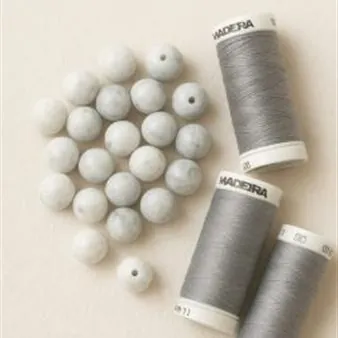

da sab 5 dic a sab 27 mar
Natale in Laboratorio – Dove la Creatività Diventa Magia
Attività organizzate dal Ricamificio di Forni di Sopra
 Indicazioni
Indicazioni
- Costi e prenotazioni
- Costo non indicato · Prenotazione non indicata
- Programma
- Programma da verificare. Apri la fonte ufficiale per orari e possibili aggiornamenti.
- In caso di maltempo
- Nessuna indicazione specifica pubblicata.
- Note
- Acquisito automaticamente dalla fonte.
L’EVENTO
Descrizione completa
Tra luci soffuse, profumo di festa e mani che creano, ti aspetta un percorso fatto di tradizioni, colori e momenti da vivere insieme. Lasciati guidare dalla fantasia e scopri la bellezza delle cose fatte a mano. PER TUTTI GLI EVENTI I POSTI SONO LIMITATI ED E’ NECESSARIA LA PRENOTAZIONE entro le ore 12:00 del giorno precedente:
Scrivi a info@ilricamificio.net oppure su whatsapp allo 0433886641 trovi maggiori informazioni su www.ilricamificio.net
🌟 Dalla Bobina alla Perlina
Lunedì 28 dicembre e martedì 5 gennaio
Vieni a scoprire con i tuoi bambini il progetto PlasticaMente e come la plastica di scarto può rinascere in piccole perle e nuovi oggetti! Una dimostrazione sorprendente che unisce creatività e sostenibilità.
ORARIO: dalle 14:00 alle 14:30 - Partecipazione gratuita
🌟Magie di Cera - laboratorio creativo per piccoli artigiani in collaborazione con Salvadri (dai 4 ai 10 anni)
28, 29 e 30 dicembre, 5 e 6 gennaio
Un’ora speciale tra storie profumate e manine al lavoro! Dopo una breve lettura dedicata al mondo delle api, i bambini creeranno e decoreranno tre mini candeline in cera d’api da portare a casa.
ORARIO: dalle 15:30 alle 16:30. Costo 13€ (materiali inclusi).
🌟 RicAma il tuo Gugjet - laboratorio creativo per bambini (dai 4 ai 10 anni)
29 e 30 dicembre dalle 17:00 alle 18:00
6 gennaio dalle 14:00 alle 15:00
Un’oretta dedicata alla tradizione e alla creatività! Tra fili colorati e cartoncini i bambini scopriranno la storia del cuore della Carnia e il mondo del ricamo in modo semplice e divertente. A fine corso porteranno a casa il loro Gugjet ricamato.
Costo 13€ (materiali inclusi).
❤️Gugjets – Cuore della Carnia
Tutti i sabati da Dicembre a Marzo
Tra aghi, fili, stoffe colorate e un allegro clima creativo, ti faremo scoprire il nostro laboratorio, la storia del cuore carnico e come nascono i “Gugjets alle erbe alpine”, dal taglio fino al confezionamento finale e scoprirai profumi e curiosità sulle erbe.
ORARIO: dalle 17:00 alle 18:00
Costo 20€ a persona
⭐Blecs – Christmas Edition
Domenica 20 – 27 dicembre e 3 gennaio
Blecs In friulano, sono le toppe con cui un tempo si rammendavano i vestiti. Oggi, quei ritagli di stoffa diventano protagonisti di un laboratorio di riciclo originale per creare ghirlande uniche e colorate!
ORARIO: dalle 14:30 alle 19:00
Costo 45,00€ a persona
IL PROGRAMMA
Programma e orari
Appuntamenti raccolti dalle fonti elencate. Dove manca un orario, non è ancora disponibile in questa scheda.
Programma pubblicato
- Dal 2026-12-05 al 2027-03-27
INFORMAZIONI UTILI
Prima di partire
- Controllare la fonte prima di partire.
ORGANIZZAZIONE